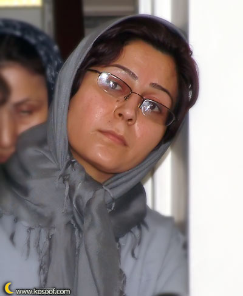

|
|
|
Browsing
Contact Us |
Campaigners |
Face to Face |
Tribune |
Interview |
News |
On the Web |
One Million |
Report
Farsi | Français | German | Italian | Spanish | العربية Also in this section
|
 Nahid Keshavarz What will they do about the Growing Awarness among female Prisoners and their Guards?Translated By Sussan Tahmasebi Friday 13 April 2007 Women’s Rights Activists, Nahid Keshavarz and Mahboubeh Hossein Zadeh, who remain in prison since April 2, 2007 for collecting signatures in support of the "One Million Signatures Campaign" demanding changes to discriminatory laws against women have, recorded their experiences among female inmates in the following two articles: What will they do about the Growing Awarness among female Prisoners and their Guards? It is Tuesday, April 10, 2007, 3:30 in the afternoon. It has been a good day for both Mahboubeh and I. It’s visitation day. Visitation day is the sweetest of days for prisoners. From the moment they announce your name till the moment you finally see your loved ones, your entire being is filled with anticipation. You stretch the moments in their presence, and in your mind, you dress yourself in your most beautiful clothes—one becoming of the occasion, albeit that you are forced to wear a veil and prison issued slippers. Perhaps for those who have never experienced prison, there is no difference between the navy colored veil lent to you by your fellow inmates with love, and the prison issued veil, marked with the logo of the Revolutionary Courts, the logo that is supposed to represent justice. But for us, there is a difference between these two, even if their colors are the same. The veil you borrow from your fellow inmates, the veil that is lent to you with love, gives you a better feeling and you view yourselves as being among your sisters and mothers rather than in the position and in the identity assigned to you by your captors. As I wait to be escorted to the visitation area, I start up a conversation with one of the female prison guards. I explain to her that I am fighting to attain equal rights for women. I tell her about the "One Million Signatures Campaign" which aims to change discriminatory laws against women. I explain that my experience in prison has reaffirmed my commitment to justice and the path that I have chosen. In jest, the guard says "let the men take second wives, why does it concern you, anyway?" I speak of my responsibilities as a citizen. I know that the guard herself is opposed to polygamy, to men’s uncontested right to divorce, and girls’ marriage at a young age, still she does not believe that I am in prison because I am fighting to change these same laws. "Certainly you must have insulted someone, that is why you are here," she says. I explain that my friends and I have employed the most civil of strategies in asking for changes to discriminatory laws against women. I explain that I believe in civic action, in creating change, and as such we are only collecting signatures in support of our demands. "This is why I have chosen to work within the Campaign. Because through this effort we can work to educate the public about these demands," I explain. I realize, more than ever before, that judges have the power to keep us in prison endless periods of time. They have the power to claim that our demands as contradictory to the foundations of the Islamic Republic, proclaim that polygamy is a main tenant of Islam and the State, and to accuse us of crimes, to equate our efforts within the "One Million Signatures Campaign" to "actions against national security, through the spread of propaganda against the Islamic Republic of Iran." But, I wonder, how will these judges, who work so hard at upholding these patriarchal traditions and laws, counter the growing awareness among female prisoners? What do judges do with the women who cite these very restrictive laws as justification for their unlawful actions? Women like Behjat, who is accused of murdering her husband. A woman who in her own defense explained to the prosecutor that "when your laws work unjustly against me and other women, and place us in an extreme disadvantage, when I spend four fruitless years in pursuit of a divorce, all the while forced to take refuge in the homes of relatives and strangers, uprooting my children time and again, am I not forced to take matters into my own hands and to ensure justice on my own?" Perhaps our court system can exhaust women’s rights activists through the infliction of threats and fear. Perhaps they can tire us through continuous summons to court, by inflicting in our hearts uncertainty, by forcing us into prison, but truly what will the court system do about the increasing awareness among its own prison guards? The social workers and guards at Evin prison know better than anyone, about the immense tragedy that results from unjust laws, oppressive cultural traditions and the male interpretations of religion. These are the realities that make up the lives of women, condemning them to "dead ends," spent in prison. In these few days we have heard a lot of stories—real stories. We have listened to the stories of these women, who, because of discriminatory laws and oppressive cultural realities, have reached an eternal dead end. We have seen women who are in prison on charges of murder, but who prior to taking matters in their own hands had tirelessly struggled to resolve their problems and to escape the cycle of violence to which they were condemned. Prior to resorting to the murder of their husbands, most of these women had never committed even the smallest of crimes. They were kind mothers and wives, who for years quietly endured the violent nature of their relationships, their husband’s unfaithfulness or his years of addiction. Forced to try all avenues to flee their cruel fait and after having met repeatedly with failures in their efforts to improve their situation, these women chose a path of escape, that in essence was never a truly a choice at all. I reach the visitation area. One of the male prison guards reads names off a list. Some of the prisoners go to a public visitation area and some are assigned cabins for their visitation. My share it seems is a cabin, with a window that separates me from my family. Nader and Sadigheh are waiting for me. My sister, who is beautiful and kind, is herself a victim of the discrimination that is enforced and perpetuated by these very laws. She fully understands me and because of her extreme kindness, she does not wish a better life for herself alone. My dear Nader, he is wearing his best clothes. My heart aches, when I see that he is wearing clothes that are my favorite. I pick up the phone in the cabin. Their voice gives me hope. They tell me about the solidarity of my friends and my colleagues who continue to push for the aims of the Campaign. I return to my prison cell, with even greater determination. On my way back, I see Mahboubeh. She too is going to visit with her family. |